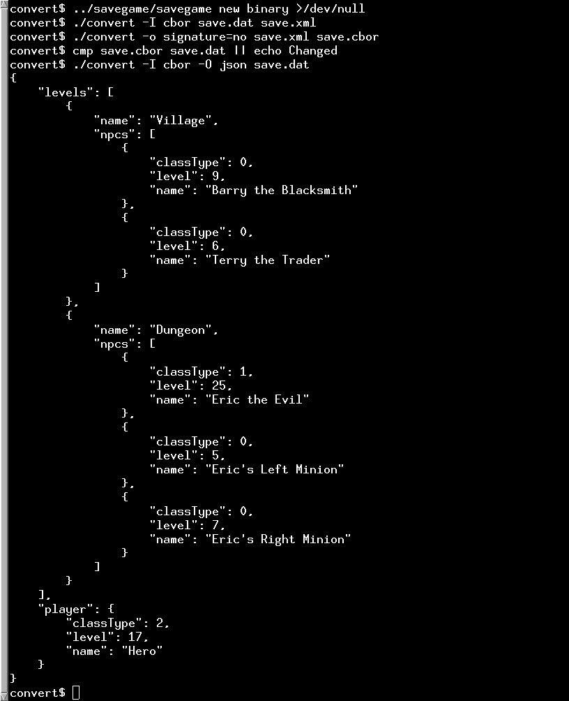

Serialization Converter
How to convert between different serialization formats.
This example converts between JSON, CBOR, XML, QDataStream and some simple text formats. It can auto-detect the format being used, or be told which format to use. Not all formats support both input and output, and they have different sets of which content datatypes they support. QDataStream and XML are the richest, followed by CBOR, then JSON, and then the plain text formats. Conversion via the less capable formats is apt to lose structure from the data.

The Converter Class
The Converter class is the abstract superclass for all the converters to and from all the formats. They all convert from or to the QVariant class, which is used to represent all the datastructures internally.
class Converter { static QList<const Converter *> &converters(); protected: Converter(); static bool isNull(const Converter *converter); // in nullconverter.cpp public: static const QList<const Converter *> &allConverters(); enum class Direction { In = 1, Out = 2, InOut = In | Out }; Q_DECLARE_FLAGS(Directions, Direction) enum Option { SupportsArbitraryMapKeys = 0x01 }; Q_DECLARE_FLAGS(Options, Option) virtual ~Converter() = 0; virtual QString name() const = 0; virtual Directions directions() const = 0; virtual Options outputOptions() const; virtual const char *optionsHelp() const; virtual bool probeFile(QIODevice *f) const; virtual QVariant loadFile(QIODevice *f, const Converter *&outputConverter) const; virtual void saveFile(QIODevice *f, const QVariant &contents, const QStringList &options) const = 0; }; Q_DECLARE_OPERATORS_FOR_FLAGS(Converter::Directions) Q_DECLARE_OPERATORS_FOR_FLAGS(Converter::Options)
The Converter constructor and destructor manage a list of available converters used by the main program so that it knows what converters are available. Each converter type defines a static instance that ensures it is constructed and thus available to the main program via this list. The allConverters() method provides main()'s code with access to the list.
Converter::Converter() { converters().append(this); } Converter::~Converter() { converters().removeAll(this); } QList<const Converter *> &Converter::converters() { Q_CONSTINIT static QList<const Converter *> store; return store; } const QList<const Converter *> &Converter::allConverters() { return converters(); }
The name() function returns the name of the converter. The directions() function is used to determine if a converter can be used for input, output, or both. These enable the main program to report what converters are available in its help text for the command-line options to select input and output formats.
QStringList inputFormats;
QStringList outputFormats;
for (const Converter *conv : Converter::allConverters()) {
auto direction = conv->directions();
QString name = conv->name();
if (direction.testFlag(Converter::Direction::In))
inputFormats << name;
if (direction.testFlag(Converter::Direction::Out))
outputFormats << name;
}
The optionsHelp() function is used to report the various command-line options supported by the available formats, when queried using its --format-options <format> command-line option.
for (const Converter *conv : Converter::allConverters()) {
if (conv->name() == format) {
const char *help = conv->optionsHelp();
if (help) {
qInfo("The following options are available for format '%s':\n\n%s",
qPrintable(format), help);
} else {
qInfo("Format '%s' supports no options.", qPrintable(format));
}
return EXIT_SUCCESS;
}
}
The outputOptions() function reports the output capabilities of a converter. At present the only optional feature is support for arbitrary keys in mappings from keys to values. An input converter's loadFile() can use this information to tailor the form in which it presents the data it has read, to be as faithfully represented by the output converter as its capabilities permit.
The probeFile() function is used to determine if a file matches the format of the converter. The main program uses this to determine what format to use when reading or writing a file, based on its name and potentially content, when the user has not specified the format to use on the command-line.
The loadFile() function deserializes data. The caller tells loadFile() which serializer it intends to use, so that loadFile() can query its outputOptions() to determine the form in which to represent the loaded data. If the caller hasn't settled on a choice of output converter, loadFile() supplies it with a default output converter suitable to the data it is returning.
The saveFile() function serializes data. It is passed options from the command-line, as described by loadHelp(), that can tune the details of how it represents the data when saving to file.
Both loadFile() and saveFile() can be used with an arbitrary QIODevice. This means that a Converter could also be used with a network socket or other source of data, to read from or write to. In the present program, the main program always passes a QFile, accessing either a file on disk or one of the standard streams of the process.
The Available Converters
Several converters are supported, illustrating how the converter program could be adapted to other formats, should the need arise. See the source code for each for its details. The CBOR converters serve as a relatively full-featured illustration of the ways converters can work, that we'll look into in more detail below. This table summarizes the available converters:
| Class | mode | format |
|---|---|---|
| CborConverter | In/Out | CBOR |
| CborDiagnosticDumper | Out | CBOR diagnostic |
| DataStreamConverter | In/Out | QDataStream |
| DebugTextDumper | Out | Lossless, non-standard, human-readable |
| JsonConverter | In/Out | JSON |
| NullConverter | Out | No output |
| TextConverter | In/Out | Structured plain text |
| XmlConverter | In/Out | XML |
Those that support input use themselves as loadFile()'s fallback converter, except for the CBOR and QDataStream converters, which use their respective output-only dumper companion classes. The null converter can be used as output converter when running the program for the sake of any validation or verification that an input converter may perform.
The CborConverter and CborDiagnosticDumper Classes
The CborConverter class supports serializing to and from the CBOR format. It supports various options to configure the output of floating point values and a signature option to determine whether to start its output with a CBOR tag that serves as a file header, identifying the file as containing CBOR data.
There is also a CborDiagnosticDumper class to output in CBOR diagnostic notation. It does not support loading data. The form of its output can be configured using two options. One selects whether to use the (more verbose) extended CBOR diagnostic format. The other control whether each CBOR value appears on a separate line.
The plain diagnostic notation is similar to JSON, but not exactly, because it supports displaying the contents of a CBOR stream losslessly, while a conversion to JSON can be lossy. CborConverter's loadFile() uses CborDiagnosticDumper for the fallback output converter, if its caller hasn't determined the output format for itself.
The convertCborValue(), convertCborMap() and convertCborArray() helper functions are used to convert a QCborValue to a QVariant, for the benefit of CborConverter::loadFile().
static QVariant convertCborValue(const QCborValue &value); static QVariant convertCborMap(const QCborMap &map) { VariantOrderedMap result; result.reserve(map.size()); for (auto pair : map) result.append({ convertCborValue(pair.first), convertCborValue(pair.second) }); return QVariant::fromValue(result); } static QVariant convertCborArray(const QCborArray &array) { QVariantList result; result.reserve(array.size()); for (auto value : array) result.append(convertCborValue(value)); return result; } static QVariant convertCborValue(const QCborValue &value) { if (value.isArray()) return convertCborArray(value.toArray()); if (value.isMap()) return convertCborMap(value.toMap()); return value.toVariant(); }
The convertFromVariant() function is used to convert a QVariant to a QCborValue for output by the saveFile() of either class.
enum TrimFloatingPoint { Double, Float, Float16 }; static QCborValue convertFromVariant(const QVariant &v, TrimFloatingPoint fpTrimming) { if (v.userType() == QMetaType::QVariantList) { const QVariantList list = v.toList(); QCborArray array; for (const QVariant &v : list) array.append(convertFromVariant(v, fpTrimming)); return array; } if (v.userType() == qMetaTypeId<VariantOrderedMap>()) { const auto m = qvariant_cast<VariantOrderedMap>(v); QCborMap map; for (const auto &pair : m) map.insert(convertFromVariant(pair.first, fpTrimming), convertFromVariant(pair.second, fpTrimming)); return map; } if (v.userType() == QMetaType::Double && fpTrimming != Double) { float f = float(v.toDouble()); if (fpTrimming == Float16) return float(qfloat16(f)); return f; } return QCborValue::fromVariant(v); }
The convert program
The main() function sets up a QApplication and a QCommandLineParser to make sense of the options the user has specified and provide help if the user asks for it. It uses the values obtained for the various QCommandLineOption instances describing the user's choices, plus the positional arguments for file names, to prepare the converters it will use.
It then uses its input converter to load data (and possibly resolve its choice of output converter, if it hasn't selected one yet) and its output converter to serialize that data, taking account of any output options the user has supplied on the command-line.
QStringList files = parser.positionalArguments();
QFile input(files.value(0));
QFile output(files.value(1));
const Converter *inconv = prepareConverter(parser.value(inputFormatOption),
Converter::Direction::In, &input);
const Converter *outconv = prepareConverter(parser.value(outputFormatOption),
Converter::Direction::Out, &output);
// Now finally perform the conversion:
QVariant data = inconv->loadFile(&input, outconv);
Q_ASSERT_X(outconv, "Serialization Converter",
"Internal error: converter format did not provide default");
outconv->saveFile(&output, data, parser.values(optionOption));
return EXIT_SUCCESS;
See also Parsing and displaying CBOR data, Saving and Loading a Game, and CBOR Support in Qt.